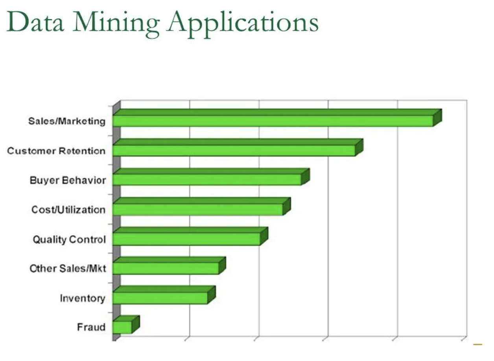

What is Data Mining?
Data Mining is a process by which data is analysed for patterns and links within large data sets. The combination of ML and statistical analysis has allowed for significant improvements in functionality (Clifton, 2024) and has created a “versatile tool” (Holdsworth, 2024) that can analyse many types of data for patterns. This ever-evolving technology has proven to be highly beneficial to all aspects of business, ranging from Sales to IT, as shown in Figure 3. Within IT, it is used alongside ML to identify security breaches through changes in company data streams, which is vital to keeping businesses and their data safe from hackers; however, it also has its downsides. (Holdsworth, 2024)

Figure 3: 8 Most Common Applications of Data Mining (Munasinghe, 2017)
Why does Data Mining pose a threat to Cybersecurity?
Although Data Mining is incredibly useful to the government and other organisations, it is also used maliciously by hackers. When hackers are searching for certain information, they use Data Mining to scan entire networks automatically, pinpointing where the desired data can be found. This saves time for the cybercriminals, resulting in organisations needing to defend themselves from more frequent attacks and data breaches. (Smith, 2009)
How does Machine Learning defend against Data Mining?
In an ideal world, ML and Data Mining would be used with the same intentions, and not be used for nefarious purposes. However, with cybercriminals gaining access to Data Mining technologies, companies have been forced to use Machine Learning algorithms to help defend against these attacks. Since ML and Data Mining are “complementary in nature”, it allows for “development of highly predictive models” (Shams, 2023), used for analysing data patterns and, identifying possible targets for cybercriminals and improving security measures.
To conclude, ML has proven to be a highly effective tool in Cybersecurity and when defending against Data Mining due to its versatile nature and ever-improving efficiency.